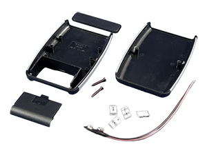

Project template containing the recommended board layout for Hammond Manufacturing 1553D-BAT:
Yellow: 1553DYLBKBAT - HM1161-ND
Translucent - Blue: 1553DTBUBKBAT - HM1159-ND
Red: 1553DRDBKBAT - HM1160-ND
Gray: 1553DGYBAT - HM1164-ND
Black: 1553DBKBKBAT - HM1158-ND
Black: 1553DBKBAT - HM917-ND
|
|
 |
The "Dwgs.User" layer contains all critical dimmensions in milimeters[inches].
The "Edge.Cuts" layer contains the maximum board outline and holes to align with board standoffs.
PCB Preview: